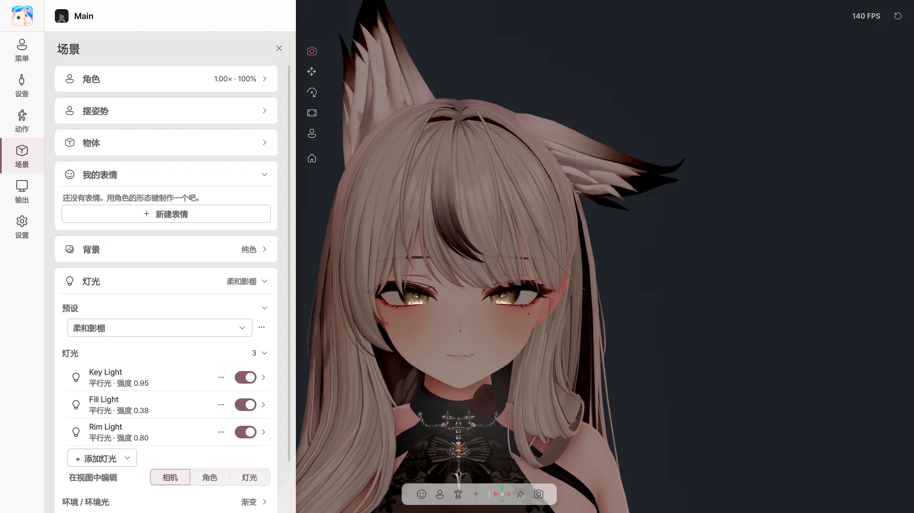

8. 场景#
在 场景 页面中设定背景、灯光和效果。摆姿势、物体和我的表情请参阅 第 11 章。

角色#
| 项目 | 作用 |
|---|---|
| 亮度 | 角色整体亮度 |
| 大小 | 角色大小 |
| 回到中心 | 将角色移到中心 |
背景#
| 选项 | 用途 |
|---|---|
| 纯色 | 任意颜色的背景 |
| 绿幕 / 蓝幕 | 色度键（OBS 色度键滤镜） |
| 透明 | 通过 Spout2 发送透明背景（窗口中显示为黑色） |
| 图片 | PNG / JPG 图片背景 |
灯光#
预设#
| 预设 | 效果 |
|---|---|
| 聚光灯 | 照亮面部的舞台灯光（默认） |
| 相机灯光 | 从相机方向照射的简单灯光 |
| 柔和影棚 / 明亮影棚 | 柔和 / 明亮的影棚灯光 |
| 面部聚焦 | 聚焦于面部 |
| 平光 VTuber | 无阴影的平面效果 |
| 暖色调 / 冷色调 | 温暖 / 冷峻的色彩 |
| 戏剧 | 强烈的侧光 |
| 场景灯光 | 导出角色时所用 Unity 场景的灯光 |
⋯ 菜单：另存为新预设 · 重命名 · 用当前灯光更新 · 复制 · 删除 · 重置灯光
灯光#
| 项目 | 作用 |
|---|---|
| 灯光开关 | 开启 / 关闭 |
| 强度 · 颜色 · 色温 | 亮度与颜色 |
| 位置 · 方向 · 目标 | 从哪里照向哪里 |
| 阴影 · 范围 | 阴影、光照范围 |
| + 添加灯光 | 面部光 · 补光 · 轮廓光 · 平行光 · 点光源 · 聚光灯 |
| 在视图中编辑 | 在视图中直接移动灯光 |
环境 / 环境光#
设定来自四面八方的光的亮度和颜色：场景天空 / 渐变 / 纯色
效果#
| 效果 | 作用 |
|---|---|
| 后期处理 | 开启 / 关闭全部效果 |
| 抗锯齿 | 减少边缘锯齿 |
| 泛光 | 光晕扩散 |
| 调色 | 曝光、对比度、饱和度、色温 |
| 暗角 | 边缘变暗 |
| 胶片颗粒 | 胶片质感 |
| 色差 | 边缘色彩溢出 |
| 景深 | 背景虚化（自动对焦面部） |
| 运动模糊 | 运动残影 |
着色器#
直接使用角色所用的着色器。已在 Poiyomi、lilToon 等主要着色器上确认。 AudioLink、镜子和相机检测、Light Volumes 无法运行。